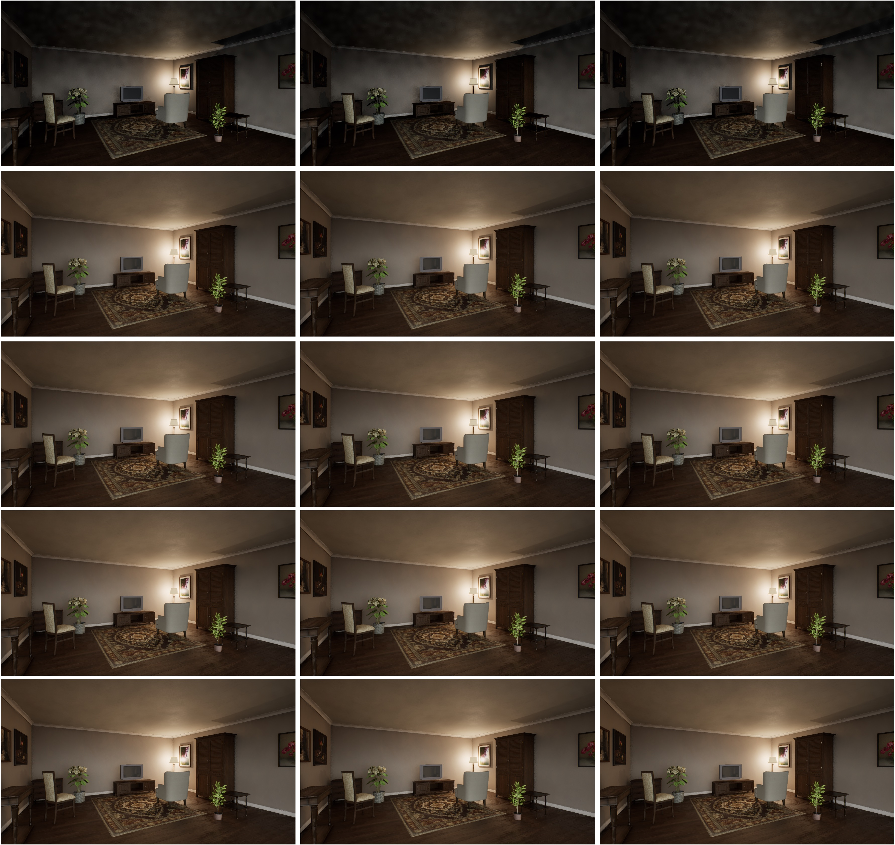

Camera Lit Capture Parameters#
Here we discuss the parameters available for controlling the lit capture of a camera in LychSim. Qualitative examples of the effects are available at the bottom of this page.
Warmup Parameters#
Capturing the lit image of a camera in LychSim requires the camera to be warmed up for a few frames before a clean image can be read back. This is a consequence of how UE5 renders the scene:
Lumen (used for both dynamic global illumination and reflections in
ULitCamSensor) is a temporal algorithm — its radiance caches, screen-space probes, and reflection data are built up over multiple frames and are not fully converged on the first render.Temporal anti-aliasing (TAA/TSR) and other screen-space effects (SSR, SSAO, bloom history, auto-exposure) likewise accumulate across frames.
The lit sensor runs with
bCaptureEveryFrame = falseandbAlwaysPersistRenderingState = true, so these caches only advance when a capture is explicitly requested. Without a few warmup captures, the first readback contains noisy GI, aliased edges, and an unconverged exposure.
There are two ways to warm up the camera:
sim.warmup_cam(cam_id=0, num_steps=20)
img = sim.get_cam_lit(cam_id=0)
img = sim.get_cam_lit(cam_id=0, warmup=20)
The results are similar, but the second approach is significantly faster. The first form invokes the full GetLit pipeline once per warmup step — each step performs a CaptureScene, a GPU -> CPU ReadPixels, an sRGB <-> linear conversion pass, image serialization, and a full network round-trip back to Python. The second form pushes the warmup count down to the sensor, which loops CaptureScene(); FlushRenderingCommands(); internally and only does the expensive readback and round-trip on the final frame, eliminating N-1 readbacks and N-1 network hops.
Average capture times for a 1280x720 lit image using different parameters on an RTX 4090 are as follows:
# Warmup Steps |
Warmup Method 1 |
Warmup Method 2 |
Warmup Method 2 + Experimental Flag |
|---|---|---|---|
0 |
0.36 |
0.36 |
0.36 |
10 |
1.14 |
0.44 |
0.44 |
20 |
1.92 |
0.52 |
0.52 |
50 |
4.28 |
0.79 |
0.79 |
100 |
8.19 |
1.23 |
1.24 |
Experimental Flag#
An experimental flag is also available for get_cam_lit, which toggles a set of post-process and show-flag overrides on the lit sensor intended to produce sharper, more deterministic captures for synthetic-data use cases. Specifically, when the flag is set, ULitCamSensor::CaptureLit disables:
Temporal anti-aliasing (
ShowFlags.TemporalAA = false) — removes temporal accumulation so each captured frame stands on its own, avoiding ghosting between captures of moving objects or cameras.Motion blur (
MotionBlurAmount = 0,ShowFlags.MotionBlur = false) — avoids velocity-based blur when objects or the camera have moved between frames.Depth of field (
DepthOfFieldScale = 0,ShowFlags.DepthOfField = false) — forces a fully sharp image regardless of the active post-process volume’s DoF settings.
These effects are useful for photorealism but harmful for most computer-vision data generation (segmentation masks, depth supervision, 6D pose), which is why they are opt-out behind the experimental flag.
Qualitative Comparison#

Comparison of lit captures with (1) left: warmup method 1, (2) middle: warmup method 2, and (3) right warmup method 2 + experimental flag. From top to bottom, the number of warmup steps is 0, 10, 20, 50, and 100.#

Comparison of lit captures with (1) left: warmup method 1, (2) middle: warmup method 2, and (3) right warmup method 2 + experimental flag. From top to bottom, the number of warmup steps is 0, 10, 20, 50, and 100.#